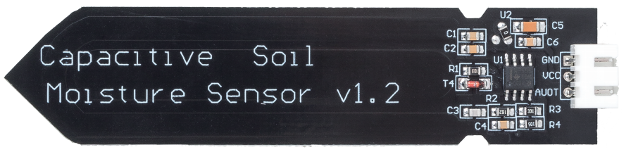
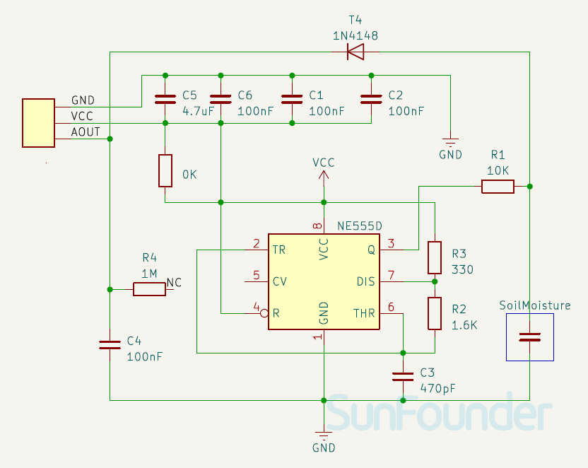
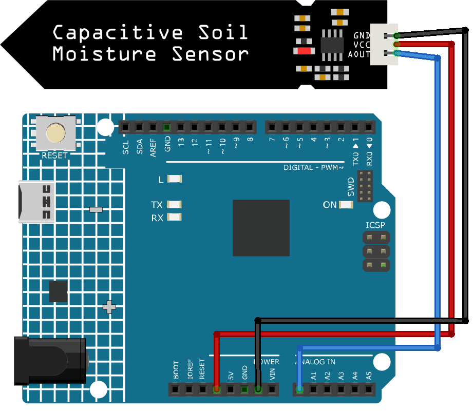

Note
Hello, welcome to the SunFounder Raspberry Pi & Arduino & ESP32 Enthusiasts Community on Facebook! Dive deeper into Raspberry Pi, Arduino, and ESP32 with fellow enthusiasts.
Why Join?
Expert Support: Solve post-sale issues and technical challenges with help from our community and team.
Learn & Share: Exchange tips and tutorials to enhance your skills.
Exclusive Previews: Get early access to new product announcements and sneak peeks.
Special Discounts: Enjoy exclusive discounts on our newest products.
Festive Promotions and Giveaways: Take part in giveaways and holiday promotions.
👉 Ready to explore and create with us? Click [here] and join today!
Capacitive Soil Moisture Module


Introduction
The Soil Moisture Module is a sensor that measures the moisture content of soil. It is used in agriculture to monitor soil moisture levels and help farmers determine when to water their crops.
Principle
This capacitive soil moisture sensor is different from most of the resistive sensors on the market, using the principle of capacitive induction to detect soil moisture. It avoids the problem that resistive sensors are highly susceptible to corrosion and greatly extends its working life.
It is made of corrosion-resistant materials and has an excellent service life. Insert it into the soil around plants and monitor real-time soil moisture data. The module includes an on-board voltage regulator that allows it to operate over a voltage range of 3.3 ~ 5.5 V. It is ideal for low-voltage microcontrollers with 3.3 V and 5 V supplies.
The hardware schematic of the capacitive soil moisture sensor is shown below.


There is a fixed frequency oscillator, which is built with a 555 timer IC. The generated square wave is then fed to the sensor like a capacitor. However, for the square wave signal, the capacitor has a certain reactance or, for the sake of argument, a resistor with a pure ohmic resistor (10k resistor on pin 3) to form a voltage divider.
The higher the soil moisture, the higher the capacitance of the sensor. As a result, the square wave has less reactance, which reduces the voltage on the signal line, and the smaller the value of the analog input through the microcontroller.
Usage
Hardware components
Arduino Uno R4 or R3 board * 1
Soil Moisture Module * 1
Jumper Wires
Circuit Assembly


Code
Code explanation
Defining sensor pin
In this part of the code, a constant integer named sensorPin is defined and assigned the value A0. A0 is the analog input pin on the Arduino board where the soil moisture sensor is connected.
const int sensorPin = A0;
Setting up the serial communication
The
setup()function is called once when the Arduino is powered on or reset. Here, we initialize the Serial library at 9600 baud rate. The baud rate is the rate at which information is transferred. In this case, it’s 9600 bits per second (bps).void setup() { Serial.begin(9600); }
Reading data and printing to the serial monitor
The loop function is where the main logic of the program resides. This function loops indefinitely once the program starts. Inside the loop, we use the
analogRead()function to read the data from the moisture sensor and print it to the Serial Monitor. We then pause the program for 500 milliseconds using the delay function before taking the next reading.void loop() { Serial.println(analogRead(sensorPin)); delay(500); }
Note
The smaller the value, the higher the soil moisture level.
Additional Ideas
Integrate a buzzer or LED that activates if the moisture level goes below a certain threshold. This way, you’ll have a physical alert to water your plants.
You could connect a water pump and automate the watering process. When the moisture level drops below a threshold, the Arduino can activate the pump to water the plants.